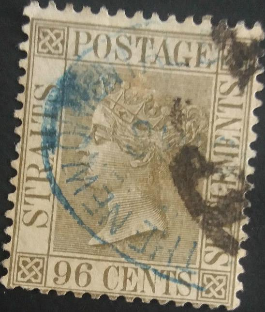
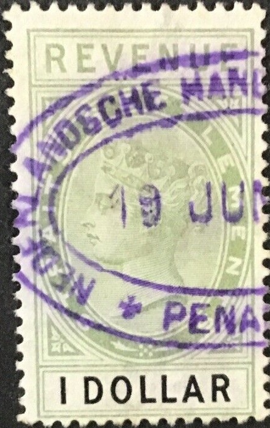
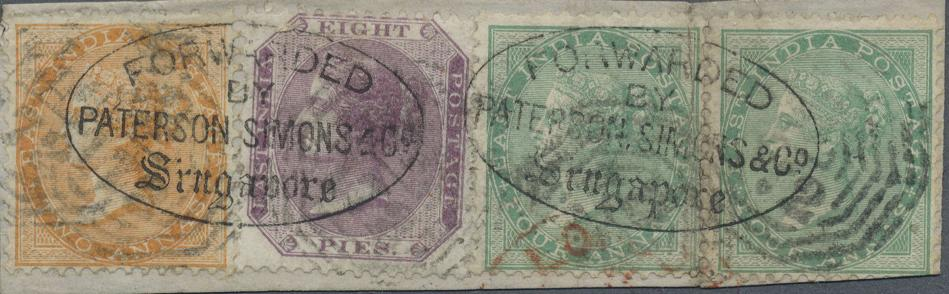

{kind=link}
{kind=link}

"NTS" (Netherlands Trading Society)
Return To Catalogue - Firm chops letters A-B - Firm chops letters C-J - Firm chops letter K - Firm chops letters L-M - Straits Settlements 1867 issue - Straits Settlements 1868-1901 - Straits Settlements cancels
Note: on my website many of the
pictures can not be seen! They are of course present in the cd's;
contact me if you want to purchase them.
The stamps of Straits Settlements are almost always heavily cancelled, most of the time they also bear firm chops (as a protection against theft). Some of them are large enough to cover three individual stamps. The following website http://www.michelhoude.com shows many of such chops and provides very useful information. More information on some firms that used these chops: http://seasiavisions.library.cornell.edu/catalog/seapage:233_675. A list of forwarding agents can be found at: http://pbbooks.com/webfa.htm
Straits Settlements firm chops on early stamps, L-M
Examples of such chops:

"THE NEW ORIENTAL BANK"

"NEDERLANDSCHE HANDEL MAATSCHAPPIJ PENANG" (Dutch
Trading Organization) on a fiscal stamp.
"NTS" (Netherlands Trading Society)

"FORWARDED BY PATERSON SIMONS & Co Singapore".
"PATERSON, SIMONS & CO SINGAPORE" (two types)

"PUTTFARCKEN RHEINER & Co SINGAPORE" in oval and
red color with or without date in the center. The second stamp
has another circular chop in blue. The third stamp is the basic
stamp of India, without the crown overprint.
"PUTTFARCKEN & Co SINGAPORE" with date in the
center.
"RAUTENBERG SCHMIDT & CO SINGAPORE" in an ellipse
or in a straight line (without frame). Several types exist of
this company.
"RS&Co" in an ellipse with dots around it from
Rautenberg, Schmidt & Co. This chop is very similar to a
"SK&Co" chop.
Perfin "RS&C" for Rautenberg Schmidt & Co.
"REMÉ BROTHERS SINGAPORE"
"ROBINSON & Co PENANG" in violet in two lines.
"RODYK & DAVIDSON"
"SANDILANDS BUTTERY & Co" and another 'FORWARDED BY
SANDILANDS BUTTERY? PENANG". This company also used
"S.B.&Co"
"SCHIFFMANN, HEER & Co PENANG"
"Schmidt, Kustermann & Co. PENANG"; also exists
with all capital letters (see second to fourth image and also the
letter). Also "S.K.&Co" in a violet ellipse. This
company also used "S.K.C." or "SK&C"
perforations.
Very similar chop as one of the above ones, but "R S &
Co." (Rautenberg, Schmidt & Co). Also a perfin
"RS&C".
"S.F.P."; Singapore Free Press. Two types exists, one
with smaller overprint (see above) and another with larger
overprint.
"S.K.C." with Penang cancel, most probably also a
Schmidt Kustermann & Co chop.
"C.SCHOMBURGK & Co SINGAPORE." in black or blue.
"SCHUSTER & ?" with an additional red
"LONDON" arrival cancel.
"FORWARDED BY SHAW, SCHOLFIELD & Co. SINGAPORE"
"G.H.SLOT PENANG" in an ellipse with a belt design at
the bottom.
"FORWARDED BY SMITH, BELL & CO SINGAPORE"
"STAEHELIN & STAHLKNECHT SINGAPORE"; exists in
violet, black or blue.
"STIVEN & Co. SINGAPORE"
"STRAITS INSURANCE Co. LIMITED"
"S.W.&Co." probably from Shaw, Whitehead & Co.
Syme & Co, "STAMPED BY SYME & Co. SINGAPORE" in
black or red. Also "SYME & CO SINGAPORE"
"BANK OF ROTTERDAM SINGAPORE AGENCY" in a box on stamps
of India.
"BANK OF ROTTERDAM SINGAPORE AGENCY" unboxed
"SYME & Co. SINGAPORE" in two lines.
"WmM&CO NO" from W.Mansfield & Co.
"WMMCK.&Co." from W.McKerrow & Co.
"W.R.S. & Co." in an ellipse
{kind=link}